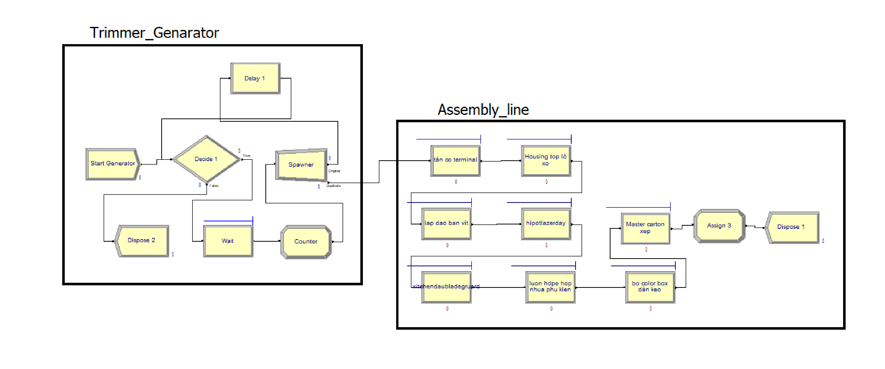
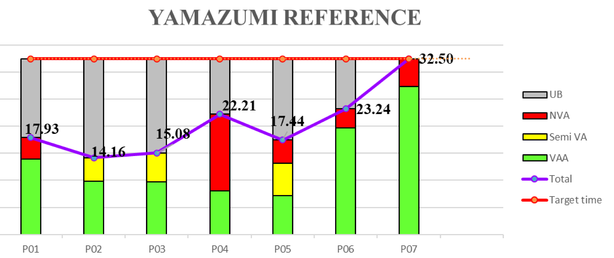
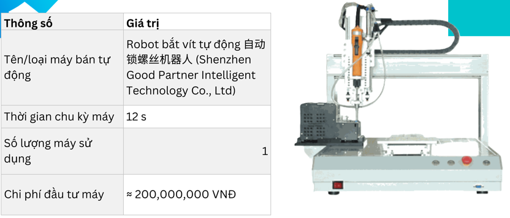

{kind=link}
Record actual cycles
The mobile-friendly collector captures multiple readings per task, normalizes item-per-cycle timing, and saves readings back into the simulator through browser storage.
Discrete event simulation portfolio
An end-to-end operations research project covering field time study, browser-based Monte Carlo simulation, Yamazumi balancing, Arena DES modeling, before and after scenario reporting, and automation analysis for the trimmer assembly process.

The project connects observed cycle data to repeatable simulation outputs. The web app handles quick experimentation, while Arena provides the discrete event model and scenario reports.
The mobile-friendly collector captures multiple readings per task, normalizes item-per-cycle timing, and saves readings back into the simulator through browser storage.
Minimum, average, and maximum readings become optimistic, most-likely, and pessimistic task inputs for triangular distributions.
The browser simulator runs many scenarios to estimate cycle-time spread, P90 risk, line capacity, takt attainment, and daily output probability.
Station assignments are stacked against takt time, separating VAA, Semi-VA, NVA, idle time, and overloaded work content.
Before and after Arena DOE files and reports document the discrete event simulation scenarios used to compare flow behavior.
Each component is included as a usable artifact: the portfolio index, the renamed simulator tool, the field data collection page, Arena scenario files, reports, and media evidence.

Browser simulation tool
The renamed tool.html keeps the existing interactive app: task setup, CSV import and export, simulation runs, value analysis, shift capacity, Yamazumi chart, DES-style flow analysis, and report exports.

Field collection workflow
data_collection.html remains connected to the simulator. It can start from a selected task, record cycle times, import CSV readings, add notes, and return calculated min, mean, and max values to tool.html.

Arena discrete event simulation
The Arena files capture the process flow and allow the modeled scenarios to be compared through DOE outputs and exported report pages.
Improvement scenario
The automation media and station screenshot support the after-scenario analysis by showing the improved work method considered in the simulation study.
The final pages show the same evidence chain a reviewer needs: distributions, value-added classification, station balancing, before and after Arena reports, and line-balance visuals.

These links keep the simulation report, slide deck, Arena reports, DOE models, fitted input workbooks, and Yamazumi template directly available from the project page.
Full written project report for the discrete event simulation study.
PresentationProject presentation deck with model logic, analysis, and results.
Arena reportArena report for the baseline scenario.
Arena reportArena report for the improved scenario.
Arena fileBaseline discrete event simulation model file.
Arena fileImproved scenario discrete event simulation model file.
Input dataFitted timing workbook used for baseline model inputs.
Input dataFitted timing workbook used for improved model inputs.
Use the tabs to review the generated report pages and model images without leaving the portfolio page.
Full process model showing generator logic and assembly-line routing.
Station balance with VAA, Semi-VA, NVA, total time, and target time.

Machine concept supporting the improved station scenario.

Monte Carlo summary and distribution.

Capacity and risk analysis report page.

Flow simulation and station utilization output.

Baseline web simulation report preview.

Baseline analysis detail page.

Baseline flow report page.

Baseline Arena report cover and summary page.

Baseline scenario detailed Arena output.

Baseline final Arena report page.

Improved scenario Arena report cover and summary page.

Improved scenario detailed Arena output.

Improved scenario final Arena report page.
The video set documents the observed assembly operations and the automation station media used to support the simulation story.
Observed station or task motion used as simulation context.
Observed station or task motion used as simulation context.
Observed station or task motion used as simulation context.
Observed station or task motion used as simulation context.
Observed station or task motion used as simulation context.
Observed station or task motion used as simulation context.
Observed station or task motion used as simulation context.
Observed station or task motion used as simulation context.
Automation concept media for the improved scenario.
Supporting documents and templates stay accessible for reviewers who want to inspect or reuse the generated outputs.
Baseline browser simulation report pages.
Open PDFImproved browser simulation report pages.
Open PDFExcel template used by the simulator export flow.
Download XLSX{kind=link}